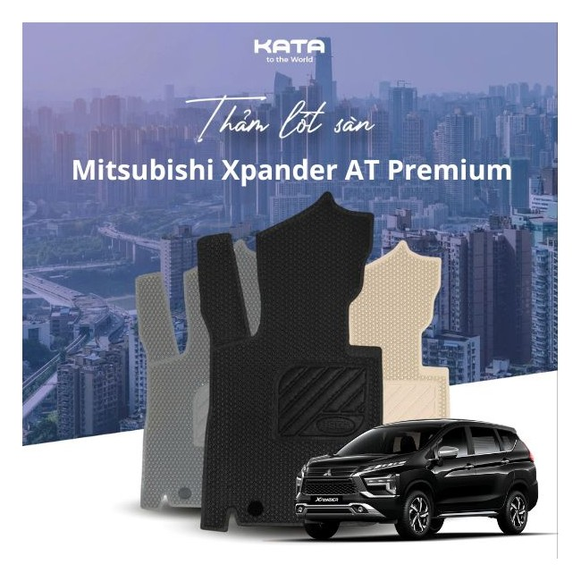

Thảm Lót Sàn Ô Tô Mitsubishi Xpander AT Premium 2024

Thông Số Kỹ Thuật
Chất liệu: Cao su cao cấp
Kích thước: Phù hợp cho Mitsubishi Xpander AT
Màu sắc: Đen
Bảo hành: 12 tháng
Mô Tả Sản Phẩm
Thảm lót sàn ô tô Mitsubishi Xpander AT Premium 2024 được làm từ chất liệu cao su cao cấp, giúp bảo vệ sàn xe khỏi bụi bẩn và nước. Với thiết kế vừa vặn, sản phẩm sẽ mang lại sự thoải mái và an toàn cho người sử dụng.